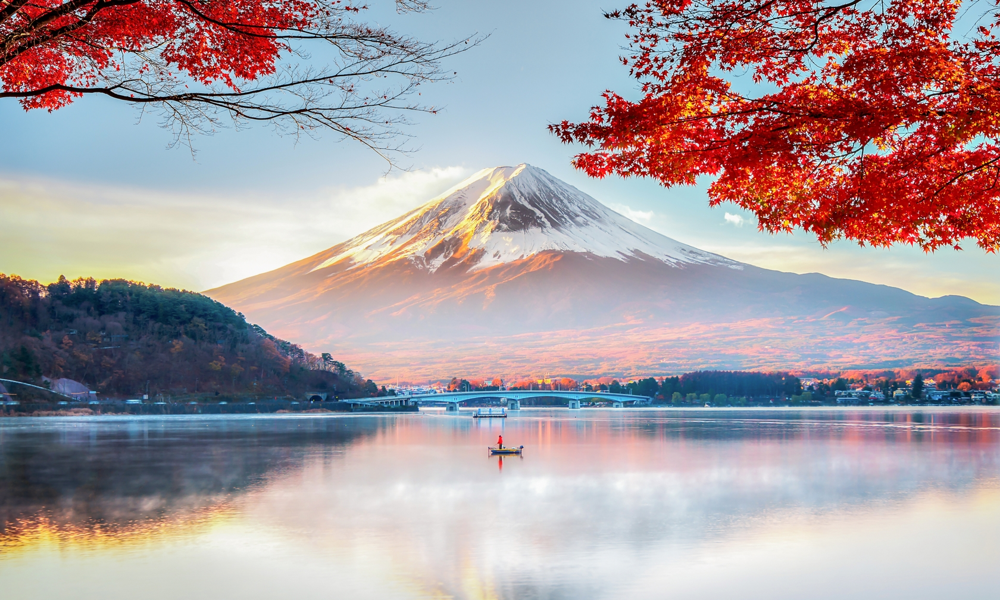

Travel In Japan
Mount Fuji
Mount Fuji (富士山) located on the island of Honshū, is the highest mountain in Japan, standing 3,776.24 m (12,389.2 ft). It is the second-highest volcano located on an island in Asia (after Mount Kerinci on the island of Sumatra), and seventh-highest peak of an island on Earth. Mount Fuji is an active stratovolcano that last erupted from 1707 to 1708. The mountain is located about 100 km (62 mi) southwest of Tokyo and is visible from there on clear days. Mount Fuji's exceptionally symmetrical cone, which is covered in snow for about five months of the year, is commonly used as a cultural icon of Japan and it is frequently depicted in art and photography, as well as visited by sightseers and climbers.
Nara
Nara (奈良市) is the capital city of Nara Prefecture, Japan. As of 1 April 2019, Nara has an estimated population of 359,666, making it the largest city in Nara Prefecture and sixth-largest in the Kansai region of Honshu. Nara is a core city located in the northern part of Nara Prefecture bordering the Kyoto Prefecture. Nara was the capital of Japan during the Nara period from 710 to 794 as the seat of the Emperor before the capital was moved to Kyoto. Nara is home to eight temples, shrines, and ruins, specifically Tōdai-ji, Saidai-ji, Kōfuku-ji, Kasuga Shrine, Gangō-ji, Yakushi-ji, Tōshōdai-ji, and the Heijō Palace, together with Kasugayama Primeval Forest, collectively form the Historic Monuments of Ancient Nara, a UNESCO World Heritage Site.

Shinjuku
Shinjuku (新宿区) is a special ward in Tokyo, Japan. It is a major commercial and administrative centre, housing the northern half of the busiest railway station in the world (Shinjuku Station) and the Tokyo Metropolitan Government Building, the administration centre for the government of Tokyo. As of 2018, the ward has an estimated population of 346,235, and a population density of 18,232 people per km2. The total area is 18.23 km2.[3] Since the end of the Second World War, Shinjuku has been a major secondary center of Tokyo (fukutoshin), rivaling to the original city center in Marunouchi and Ginza. It literally means "New Inn Ward".